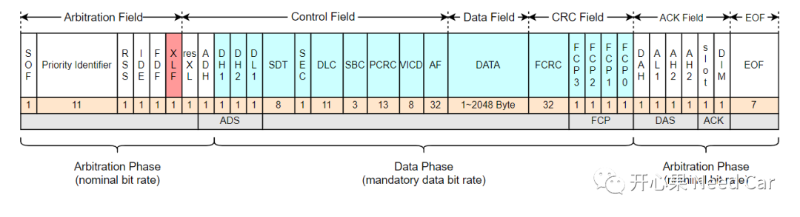

开心果 Need Car · 2022-12-11T08:22:00+08:00 · 微信原文
近些年，汽车技术不断更新迭代，着实考验着工程开发人员的学习和适应能力。在我们还没有好好消化CAN和CAN FD的时候，CAN XL随时准备"诞生"。CAN XL主要是想进一步提高CAN FD通信速率、负载率不高的问题。2020年，CAN XL技术由CiA（CAN in Automation)推出，将通信速率定位10Mbps，数据带宽最大到2048 Byte（完全可以包含一帧以太网数据,1500 byte）。既然是10Mbps的通信速率，和Ethernet、Flexray就存在着通信速率重叠的范畴，到底CAN XL能否抢占这块高地，就要看之后的可靠性和成本了。
首先，我们要思考一下："为什么要提出CAN XL呢？"单纯的为了提高CAN的通信速率吗？个人一点看法：目前，不管国内还是国外，域控的浪头已经掀得很高，意味着下一代电子电器架构势必需要更高带宽和更高速率的通信总线，只有这样，才能支撑起域控所需的大数据、高速率的要求。但是，已有的Flexray、MOST、Ethernet成本和稳定性都未必是最优的解决方案，所以，CiA组织想推出CAN XL，即兼顾着CAN的高容错性，也兼顾着成本。
CAN XL还是会像CAN FD"出生"时那样，向后兼容。如同CAN FD推向商用需要思考的问题一样：CAN XL的使用，软/硬件上需要做哪些改动？
首先，线缆的选用是否依然是现有的双绞线方式?暂时没有看到更多的资料信息，但是，很有可能需要推出兼容CAN/CAN FD/CAN XL的接口；
其次，CAN Controller需要进一步地拓展CAN XL功能，目前，英飞凌的下一代AURIX™ TC4x产品，已准备支持CAN-XL网络接口；
再次，软件的驱动层配置势必有所改变，即：会增加对应CAN XL数据长度、速率等相关特性的寄存器配置。对于使用Autosar架构的上层模块，或多或少的也会有所更改，比如：CanIf层的CAN类型选择等。
1、CAN XL Frame
CAN XL的帧格式如下所示：

FCP：Format Check Pattern，格式检查，对于固定位的检查，类似CAN/CAN FD的Format检查。
CAN XL既然要提高数据的吞吐量，为什么最大支持2048 Byte呢？再多点不可以吗？个人理解：为了可以将一帧完整的以太网帧装载下。以太网+CAN XL的协议信息，设置2048即可，再大也没有太多意义。
更多的解读，等能完整地看到CAN XL规范以后和大家再细聊。
目前，像Vector的产品已经开始支持CAN XL的仿真，这是国内供应商所无法比拟的，当我们连标准都没有完全看到的时候，人家产品已经匹配。再比如：是德科技（Keysight Technologies）率先研发出了支持CAN XL解析的示波器。我们一直落后一步，何时，国内车企也能率先搞出自己的标准，让其他国家学习我们的标准，给我们缴费，买我们的产品，我们给他们颁发认证证书？
往期精彩回顾